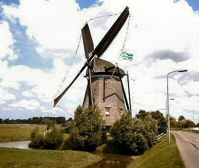

"De Dijkmolen"

|  | In 1391 wordt de Ommedijkse polder, die later Dijkpolder zou worden genoemd, bedijkt. Voor de bemaling van deze polder werd een molen gebouwd, die tot 1606 "Kostverloren" werd genoemd. In 1611 is dit veranderd in "Dijkmolen". Ingrijpend herstel vond plaats in de jaren 1642 en 1653. Nadat in 1670 nogmaals een grote restauratie aan de molen heeft plaatsgehad, is de molen in 1718 door de huidige vervangen. De uit 1879 daterende wateras is afkomstig van de molen van de "Aalkeetbinnenpolder". De molen is in de jaren 1934-1959 verdekkerd geweest en daarna weer uitgerust met "oud Hollands tuig" Ook in 1968 vonden herstelwerkzaamheden plaats: de romp werd van nieuw riet voorzien en het woongedeelte verbouwd. In 1982 zijn de uit resp. 1876 en 1879 stammende "potroeden"vervangen door twee gelaste stalen roeden. De oude roeden bleken overigens uit twee buitenroeden te bestaan. Ook in de kap is in 1985 het nodige vervangen. Zo zijn de voeghouten, de busbalk, penbalk, windpeluw en voorkeuvelens vernieuwd. Nieuwe staven van pokhout zijn in 1987 in het bovenschijf aangebracht. Staartbalk en de lange spruit dateren van 1990. Op 19 februari 1993 tijdens een bui sloeg het zeil dermate hard tegen de hekkens, dat de bovenste 19 heklatten afbraken en een aantal ervan over de Molenweg en de Zuidgaag vlogen en er zelfs een paar in de Commandeurspolder in het weiland stonden. Dit had tot gevolg dat binnenroede in 1993 en de buitenroede in 1994 opnieuw opgehekt werden. De veldmuren van de molen zijn in 1995 ontdaan van de witte kalklaag, uitgehakt/geslepen, en opnieuw gevoegd. |
| Onder de kalklaag kwamen zulke mooie ijsselsteentjes te voorschijn dat de
muur niet meer is gewit. In mei 1996 zijn aan de regenzijde vier nieuwe kuipstukken
aangebracht en tevens de koppen van vier achtkantstijlen, welke behoorlijk ingerot waren,
uitgehakt en aangestort. Ook in 1997 werd er aan de molen gewerkt: dit betrof het
vervangen van de korte spruit en drie van de vier schoren. De
afgelopen jaren is er ook
weer regelmatig onderhoud uitgevoerd:
er is een nieuwe voering voor de vang
aangebracht, het achtkant is van een nieuwe laag
riet voorzien (over de oude laag), In 2004
is er op het bovenwiel een nieuwe velg en een nieuwe gang kammen aangebracht.
Tevens zijn de staven in het onderschijfloop gedraaid. Voor de komende tijd
staat het restaureren van het metselwerk van de waterlopen en krimpmuren
en het vervangen van het scheprad op het programma. De molen
wordt bewoont door de molenaar en zijn gezin en doet nog dienst als hulpgemaal van de
Dijkpolder. Bekijk hier een opname van de Dijkmolen gemaakt door een Drone, |
Technische gegevens
| naam adres bouwjaar type functie polder eigenaar molenaar openingstijden |
"Dijkmolen" Molenweg 6, 3155 AV Maasland. 1718 grondzeiler poldermolen Dijkpolder (ca. 545 ha.) sinds 1 jan 1977 Het Hoogheemraadschap van Delfland. Henk de Bruijn (sinds aug. 1982, 4e generatie de Bruijn) Tel no: 06-53578054 Alleen op Westlandse molendag |
Constructie
| voet romp kap wiekenkruis vlucht wiekvorm bovenas kruiwerk vang inrichting wateras opvoerhoogte |
veldmuren 1,75 m. hoog houten achtkant met riet gedekt met riet gedekt ijzeren roeden, Fabr. Derckx, Beegden. binnenroede: nr. 411 buitenroede: nr. 410 (beide uit 1982) 29,20 m. oud - Hollands gietijzer, fabr. L.I. Enthoven & Co, ijzergieterij te s'Gravenhage 1862 no. 337 ; lang 6,35 m. 48 houten rollen ; kruirad losse Vlaamse blokvang uit vier stukken ; wipstok ijzeren scheprad in de molen Ø 6,50 m. ; breedte 0,50 m. gietijzeren wateras en sintelstuk ; fabr. De Prins van Oranje, ijzergieterij te s'Hage 1879 no. 1221 1,90 m. |
Overbrengingen
| aantal kammen bovenwiel aantal staven bovenschijfloop aantal staven onderschijfloop aantal kammen onderwiel overbrengingsverhouding |
74 39, steek 11,5 cm. 27 98, steek 15,0 cm. 1.91 : 1 |
Versieringen
|
baard met opschrift : ANNO 1718 zowel links als rechts van de oostelijke deur een gevelsteen |
 Deze pagina is gemaakt op 14-12-2006 tijd 22:26 uur.
Deze pagina is gemaakt op 14-12-2006 tijd 22:26 uur.

Laatste wijziging: